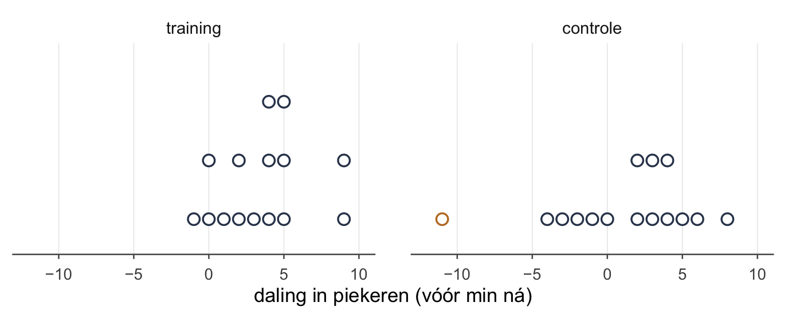
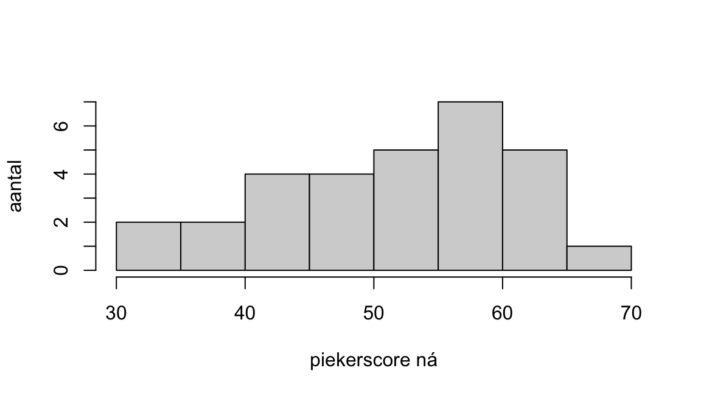

welke toets bij welke vraag — en alle weken door elkaar
Wat je deze week leert
bij een onderzoeksvraag de toets kiezen, met drie vragen
de zeven toetsen naast elkaar: wanneer, wat je uitrekent, en hoe in R
waarom twee vragen die op elkaar lijken een andere toets nodig hebben
in R alle toetsen op één dataset
een groot tentamenblok, met alle weken door elkaar
Terug naar de vraag
Zeven weken geleden begon dit oefenboek met één vraag: zit dat verschil ook in de populatie, of had je net zo goed toevallig déze mensen kunnen trekken? Die vraag is niet veranderd. Wat veranderde, is het jasje: één gemiddelde, twee gemiddelden, categorieën, met en zonder klok.
Op een tentamen is het rekenen zelden het probleem. Het probleem zit ervóór. Je leest een onderzoeksvraag, er staan twee variabelen in en wat getallen, en je weet: hier moet een toets. Alleen wélke? Dit is de week waarin je dat leert kiezen. Niet door zeven verhalen uit je hoofd te leren, maar met drie vragen. De rest van het verhaaltje rond een onderzoek doet er voor de keuze niet toe.
Drie vragen, zeven toetsen
Figuur 1: Het beslispad: drie vragen, zeven toetsen. Lees van links naar rechts; elke tak eindigt in één toets. Bij één groep is de laatste vraag of je σ kent; bij twee groepen en bij gepaarde metingen of de klok mag; bij χ² of de verwachte aantallen groot genoeg zijn.
De eerste vraag: wat meet je?
Kijk naar de uitkomst. Die is een van drie soorten.
Een categorie — ja of nee, een studierichting, een woonsituatie. Dan tel je: hoeveel mensen zitten in elk hokje?
Een getal met vaste afstanden — een score, een tijd, een leeftijd. Dan reken je: een gemiddelde, een verschil.
Een rangorde — vier smileys van “heel stom” tot “heel leuk”, of “slecht, matig, goed, heel goed”. Die staan op volgorde, maar de treden zijn niet even hoog: van “stom” naar “leuk” is niet per se even ver als van “leuk” naar “heel leuk”.
Tel je, en heb je twee categorische variabelen, dan ben je bijna klaar: de χ²-toets voor onafhankelijkheid. Die vergelijkt wat je in elk hokje telt met wat je zou verwachten als de twee variabelen niets met elkaar te maken hebben. Hij heeft geen klok nodig, alleen genoeg mensen per hokje: de verwachte aantallen mogen niet te klein zijn. Dat is week 4 (Kansen en toetsen voor categorische variabelen).
Een getal of een rangorde loopt door naar de tweede vraag. Bij twee groepen of gepaarde metingen komt een rangorde bij de derde vraag vanzelf uit bij een rangtoets.
Pas op met getallen die een code zijn. Staat er “1 = thuis, 2 = op kamers, 3 = anders”, dan is dat een categorie. Het is niet zo dat een 3 meer “wonen” is dan een 1. Een gemiddelde woonsituatie van 1.8 betekent niets.
De tweede vraag: wie vergelijk je met wie?
Bij een getal of een rangorde zijn er drie mogelijkheden.
Eén groep tegen een vast getal. Je hebt één steekproef en een getal om tegen af te zetten: het gemiddelde in de bevolking, een norm, een oude waarde. Dat zijn de toetsen voor één gemiddelde uit week 2 (Hypothesetoetsen voor één gemiddelde).
Twee groepen met andere mensen erin. Training tegenover controle, rokers tegenover niet-rokers. Wie in de ene groep zit, zit niet in de andere: de groepen zijn onafhankelijk.
Dezelfde mensen, twee keer gemeten. Vóór en ná, ’s ochtends en ’s avonds. De metingen zijn gepaard. Dat geldt ook voor paren die bij elkaar horen, zoals de twee helften van een tweeling of van een stel.
Twee groepen, onafhankelijk of gepaard, zijn allebei week 3 (Hypothesetoetsen voor twee gemiddelden en betrouwbaarheidsintervallen). Twijfel je tussen die twee, stel dan deze vraag: kun je elke score koppelen aan precies één andere score? Ja: gepaard. Nee: onafhankelijk.
Je databestand verraadt het ook. Staan de twee metingen naast elkaar op één rij — een kolom vóór en een kolom ná — dan is het gepaard. Staat er een kolom die zegt in welke groep iemand zit, en één kolom met de uitkomst, dan is het onafhankelijk.
Bij gepaarde metingen reken je per persoon het verschil uit. Daarna heb je één rij verschilscores, en die toets je tegen 0. Een gepaarde toets is dus eigenlijk een toets voor één gemiddelde: het gemiddelde verschil. Alleen staat de σ van zulke verschilscores in geen enkele handleiding. Daarom vraag je bij gepaarde metingen niet naar σ, maar of de klok mag.
De derde vraag: ken je σ, en mag de klok?
Bij één groep is de laatste vraag: ken je de standaarddeviatie van de populatie (σ)? Die staat soms in de handleiding van een vragenlijst. Ken je hem, dan de z-toets. Ken je hem niet en schat je hem met de standaarddeviatie van je steekproef (s), dan de t-toets, met n − 1 vrijheidsgraden. Hoe groot je groep is, beslist hier niet: ook met honderd mensen is het de t-toets als je σ niet kent.
Bij twee groepen en bij gepaarde metingen is de laatste vraag: mag de klok? Op een tentamen heet dat de assumptie van normaliteit.
De t-toetsen gebruiken een klokvormige steekproevenverdeling. Dat mag als de scores in de populatie ongeveer normaal verdeeld zijn; bij gepaarde metingen gaat het om de verschilscores.
Let op het woord populatie. Geen enkele steekproef is precies normaal verdeeld, en dat is ook niet de vraag. De vraag is of je scores uit een ongeveer normaal verdeelde populatie kúnnen komen. Dat kijk je na met je ogen: een histogram, een boxplot of een stippenplot, en het gemiddelde naast de mediaan.

Figuur 2: De daling in piekeren per persoon, links in de trainingsgroep, rechts in de controlegroep. Eén stip is één persoon. Links liggen de stippen bij elkaar; rechts ligt er één ver weg, bij −11.
De klok mag niet als:
je uitkomst een rangorde is: de afstanden tussen de treden staan niet vast;
je groepen klein zijn en de scores duidelijk scheef liggen, of er een flinke uitschieter in zit.
Hoe groot is groot genoeg? Daar bestaat geen vast getal voor. Wel een richting: bij een handvol mensen per groep moet het er netjes uitzien; bij tientallen per groep is de klok minder kieskeurig, want dan wordt de steekproevenverdeling van het gemiddelde vanzelf klokvormig, ook als de scores scheef liggen. Dat is de centrale limietstelling uit week 2.
Daartussen twijfel je soms, zoals rechts in Figuur 2: vijftien mensen en één flinke uitschieter. Twijfel je, doe dan allebei. Geven de t-toets en de rangtoets dezelfde beslissing, dan hangt je conclusie niet aan de klok. Zeg dan wel welke je als eerste neemt, en waarom.
Zegt een opgave niets over de vorm van de scores, dan mag de klok.
Mag de klok niet, dan neem je een rangtoets: de rangsomtoets bij twee onafhankelijke groepen, de signed-rank-toets bij gepaarde metingen. Die zetten de scores eerst op volgorde en rekenen met de rangnummers. Een uitschieter is daar gewoon “de hoogste”, hoe ver hij ook weg ligt. Dat is week 6 (Assumpties en alternatieve toetsen).
OpmerkingVoor wie verder wil — één groep zonder klok
Ook de t-toets voor één groep leunt op de klok. Toch staat er in het beslispad voor één groep tegen een vast getal geen rangtoets. Die bestaat wel: de signed-rank-toets kan ook de scores van één groep tegen een vast getal zetten, in plaats van tegen een tweede meting. In dit oefenboek gebruik je hem alleen voor gepaarde metingen. Bij één groep kijk je dus alleen of er iets geks in je scores zit, en zeg je dat erbij.
De zeven op een rij
Wanneer welke toets
toets
uitkomst
wie met wie
voorwaarde
in R
z-toets voor één gemiddelde
getal
één groep tegen een vast getal
σ bekend
met de hand, pnorm()
t-toets voor één gemiddelde
getal
één groep tegen een vast getal
σ onbekend
t.test(x, mu = 50)
onafhankelijke t-toets (Welch)
getal
twee groepen, andere mensen
klok mag
t.test(y ~ groep)
gepaarde t-toets
getal
dezelfde mensen, twee keer
klok mag (voor de verschilscores)
t.test(x1, x2, paired = TRUE)
rangsomtoets (Wilcoxon)
getal of rangorde
twee groepen, andere mensen
klok mag niet, of een rangorde
wilcox.test(y ~ groep)
signed-rank-toets (Wilcoxon)
getal of rangorde
dezelfde mensen, twee keer
klok mag niet, of een rangorde
wilcox.test(x1, x2, paired = TRUE)
χ²-toets voor onafhankelijkheid
categorie
twee categorische variabelen
verwachte aantallen niet te klein
chisq.test(table(a, b))
En wat je bij elke toets uitrekent. De formules zijn die van de weken waar ze thuishoren; hier staan ze naast elkaar, zodat je ziet hoe weinig ze verschillen.
Wat je uitrekent
toets
toetsstatistiek
vrijheidsgraden
effectmaat
z-toets, één gemiddelde
geen
t-toets, één gemiddelde
onafhankelijke t-toets
met de hand de kleinste van en ; R rekent hem exact
d, en
gepaarde t-toets
( paren)
d, en
rangsomtoets
W: de rangsom van één groep, omgezet in een z
geen
signed-rank-toets
T⁺: de som van de positieve rangen, omgezet in een z
geen
χ²-toets
(rijen − 1)(kolommen − 1)
φ of Cramérs V
De letters in deze tabel:
is de waarde uit , zoals de 50 van de piekervragenlijst;
is het gemiddelde verschil, de standaarddeviatie van de verschilscores;
O is wat je telt (observed), E wat je verwacht.
Hoe je de effectmaten uitrekent en leest, staat in week 5 (Effectmaten en power).
OpmerkingFormules — de z bij de rangtoetsen
Bij een rangtoets reken je met de hand de rangsom om in een z, met het gemiddelde en de standaarddeviatie die die rangsom zou hebben als waar is. Dit heb je nodig voor een rekenvraag als tentamenvraag 24.
Bij de rangsomtoets, met de groep waarvan je de rangsom W neemt:
Bij de signed-rank-toets, met n het aantal paren waarvan het verschil niet nul is (een verschil van nul gaat eruit):
Met de hand zonder correctie. Hoe je de rangen toekent en wat je met gelijke scores doet, staat in week 6.
Wat er bij elke toets hoort
De zes stappen van week 1 blijven, welke toets je ook kiest. Wat er per toets verschilt, zit in stap 2 en 3: welke steekproevenverdeling, en welke toetsstatistiek. Daar komen nu drie dingen bij die je in week 1 nog niet had.
De zes stappen, en wat erbij komt
stap uit week 1
wat je bij elke toets opschrijft
1. hypothesen
en , tweezijdig, ook als de onderzoeker een richting verwacht; en α (.05)
2. steekproevenverdeling
welke: z, t met hoeveel vrijheidsgraden, χ², of de rangen
3. toetsstatistiek
het getal uit je steekproef: z, t, χ², W of T⁺
4. p-waarde
de p uit R, naast α; of de toetsstatistiek naast een grens zoals 1.96
5. statistische conclusie
verwerpen of niet, en wélke
6. inhoudelijke conclusie
het antwoord op de onderzoeksvraag, in gewone woorden
erbij: het interval
welke waarden je data nog toelaten (week 3)
erbij: de effectmaat
hoe groot het verschil is (week 5)
erbij: een figuur
een staafdiagram bij χ², een boxplot per groep bij twee groepen, een histogram van de verschilscores bij gepaarde metingen
TipEn de permutatietoets?
Die staat niet in het beslispad, omdat je hem niet met de hand uitvoert. Het idee moet je wél kennen, en je kent het al. Hussel de groepslabels door elkaar, reken het verschil tussen de groepen uit, en doe dat heel vaak. Elk gehusseld verschil is een stip: zo ziet het verschil eruit als de groep er niet toe doet. Tel dan hoeveel stippen minstens zo ver van 0 liggen als jouw echte verschil.
Dat is precies wat je in week 1 deed met de bordjes, alleen worden de stippen hier gemaakt door te husselen in plaats van door denkbeeldige steekproeven.
Eén dataset, vier vragen
De oefendataset slaapstudie ken je uit week 1: 30 eerstejaars die slecht slapen. De helft kreeg een slaaptraining, de andere helft niet. Van iedereen staat er een piekerscore vóór en ná. De vragenlijst is zo gemaakt dat het gemiddelde in de bevolking 50 is en de standaarddeviatie 10.
De eerste zes rijen van slaapstudie
id
groep
leeftijd
piekeren_voor
piekeren_na
1
training
19
54
51
2
controle
24
49
45
3
training
19
48
47
4
training
26
54
55
5
controle
34
61
58
6
controle
21
54
56
Zie je de twee vormen uit de tweede vraag? piekeren_voor en piekeren_na staan naast elkaar op één rij: dat is gepaard. De kolom groep verdeelt de mensen in twee: dat is onafhankelijk.
Vier vragen aan dezelfde tabel. Ze klinken als familie, en ze vragen elk een andere toets.
OpmerkingOnderzoeksvraag A — Piekeren slechte slapers anders dan de bevolking?
Het pad. Je rekent (een piekerscore) → één groep tegen een vast getal (50) → σ is bekend (10) → de z-toets voor één gemiddelde.
Hypothesen. : μ = 50; : μ ≠ 50, met μ de gemiddelde piekerscore van slechte slapers, vóór de training.
Met de hand. De 30 piekerscores vóór hebben een gemiddelde van 54.17.
Beslissen. 2.28 ligt voorbij 1.96: verwerp de nulhypothese dat slechte slapers gemiddeld 50 scoren. R geeft er p = .022 bij.
Conclusie. Slechte slapers piekeren gemiddeld meer dan de bevolking, z = 2.28, p = .022.
Kende je σ niet, dan had je de t-toets genomen met s = 9.31: t(29) = 2.45, p = .021. Zelfde beslissing.
OpmerkingOnderzoeksvraag B — Daalt het piekeren bij wie de training kreeg?
Het pad. Je rekent → dezelfde mensen, twee keer gemeten → de klok mag (zie hieronder) → de gepaarde t-toets.
Hypothesen. Reken per persoon de daling uit: vóór min ná. : ; : , met de gemiddelde daling in de populatie van slechte slapers die de training krijgen.
Met de hand. De 15 mensen in de trainingsgroep dalen gemiddeld = 3.47 punten, met = 2.97.
met df = 15 − 1 = 14.
Beslissen. R geeft p < .001. Verwerp de nulhypothese dat de gemiddelde daling 0 is.
Conclusie. In de trainingsgroep daalt het piekeren, t(14) = 4.52, p < .001.
Mag de klok hier? Kijk naar de linkerhelft van Figuur 2. De dalingen in de trainingsgroep lopen van −1 (één persoon ging één punt méér piekeren) tot 9, zonder uitschieter, en gemiddelde (3.47) en mediaan (4) liggen dicht bij elkaar. De signed-rank-toets geeft hetzelfde antwoord: p < .001.
Werkt de training dus? Nee, dat zegt deze toets niet. Ook zonder training kan het piekeren dalen: door de tijd, door het tentamen dat voorbij is, omdat je de tweede keer een vragenlijst anders invult. Om te weten of de training iets doet, moet je de daling vergelijken met die in de controlegroep. Dat is een andere vraag.
OpmerkingOnderzoeksvraag C — Daalt het piekeren met training méér dan zonder?
Het pad. Je rekent (de daling) → twee groepen, andere mensen → mag de klok? Twijfel (zie hieronder), dus allebei: de onafhankelijke t-toets, en de rangsomtoets ernaast.
Kijk wat er gebeurd is. Door per persoon de daling uit te rekenen, heeft iedereen nog maar één getal. De koppeling vóór–ná is opgebruikt; wat overblijft zijn twee groepen met verschillende mensen.
Hypothesen. : ; : , met μ de gemiddelde daling in de populatie, met en zonder training.
Met de hand.
De daling in piekeren per groep
n
gemiddelde daling
s
training
15
3.47
2.97
controle
15
1.07
4.76
Reken de noemer in stukjes uit, één per regel:
Met de hand neem je als vrijheidsgraden de ondergrens uit week 3, de kleinste van en : df = 14.
Beslissen. Bij 14 vrijheidsgraden hoort p = .12. R zelf rekent de vrijheidsgraden van Welch exact uit, 23.49, en komt op p = .11. Op kladpapier reken je met 14; in een verslag neem je over wat R geeft. De p schuift een beetje, de beslissing niet: beide keren boven .05, dus niet verwerpen. De nulhypothese dat de daling met en zonder training gemiddeld even groot is, verwerp je niet.
En de rangsomtoets? R geeft p = .18: ook niet verwerpen.
Conclusie. In deze steekproef daalt het piekeren met training gemiddeld 2.40 punten meer, maar dat verschil is niet significant, t(23.49) = 1.66, p = .11. De rangsomtoets geeft dezelfde beslissing.
Waarom allebei? In de controlegroep zit één uitschieter: iemand ging 11 punten omhoog, de oranje stip in Figuur 2. Met 15 mensen per groep is dat een twijfelgeval. De t-toets staat hier voorop, omdat het om één uitschieter gaat en de rest van de controlegroep netjes ligt; de rangsomtoets is de controle. Ze geven dezelfde beslissing, dus de conclusie hangt niet aan de klok, en geen van beide is fout. Hadden ze verschild, dan had je de rangsomtoets voorop gezet: die heeft geen last van de uitschieter.
WaarschuwingSignificant in de ene groep is geen verschil tussen de groepen
Onderzoeksvraag B was significant, C niet. Dat is geen tegenspraak. B vraagt of het piekeren daalt in de trainingsgroep; C vraagt of het daar méér daalt dan zonder training. Op de vraag “werkt de training?” geeft alleen C antwoord, en dat antwoord is: met deze 30 mensen kun je het niet laten zien. Het verschil kan er best zijn — niet significant is niet hetzelfde als gelijk.
Je ziet het ook in Figuur 2. Links liggen bijna alle stippen rechts van 0: in de trainingsgroep daalt het piekeren. Maar de stippen van links en rechts liggen grotendeels over elkaar heen.
OpmerkingOnderzoeksvraag D — Zitten er na afloop in de trainingsgroep vaker lage piekeraars?
Het pad. Hier wordt de piekerscore ná eerst in drie groepen van tien gehakt: laag (47 of lager), midden (48 tot en met 56) en hoog (57 of hoger). Dan tel je → twee categorische variabelen (groep en piekergroep) → de χ²-toets voor onafhankelijkheid.
Hypothesen. : groep en piekergroep zijn in de populatie onafhankelijk; : ze hangen samen.
Met de hand.
Groep en piekergroep na afloop, geteld
laag
midden
hoog
totaal
training
5
6
4
15
controle
5
4
6
15
totaal
10
10
10
30
Verwacht in elk hokje: rijtotaal maal kolomtotaal, gedeeld door het totaal. Hier is dat overal .
met df = (2 − 1)(3 − 1) = 2.
Beslissen. R geeft p = .67, boven .05, dus niet verwerpen. De nulhypothese dat groep en piekergroep onafhankelijk zijn, verwerp je niet.
Conclusie. Na afloop zijn de piekergroepen in de trainings- en de controlegroep niet significant anders verdeeld, χ²(2, N = 30) = 0.80, p = .67.
Onderzoeksvraag D werkt, maar gooit iets weg. Wie 47 scoort en wie 33 scoort, zitten allebei in “laag”, alsof ze gelijk zijn. Heb je het getal zelf, dan is een toets op het getal bijna altijd scherper.
OpmerkingControle in R — de vier vragen
Hoe je dit zelf intypt, staat hieronder in In R: alle toetsen op één dataset. Dit kader laat alleen zien dat R hetzelfde vindt.
# A. z-toets: R heeft er geen functie voor, dus met de hand in Rn <-nrow(slaapstudie)z <- (mean(slaapstudie$piekeren_voor) -50) / (10/sqrt(n))z
[1] 2.282177
2*pnorm(-abs(z))
[1] 0.02247887
training <- slaapstudie[slaapstudie$groep =="training", ]# B. gepaarde t-toets in de trainingsgroept.test(training$piekeren_voor, training$piekeren_na, paired =TRUE)
Paired t-test
data: training$piekeren_voor and training$piekeren_na
t = 4.5163, df = 14, p-value = 0.0004839
alternative hypothesis: true mean difference is not equal to 0
95 percent confidence interval:
1.820333 5.113000
sample estimates:
mean difference
3.466667
slaapstudie$daling <- slaapstudie$piekeren_voor - slaapstudie$piekeren_na# C. onafhankelijke t-toets op de daling, en de rangsomtoets ernaastt.test(daling ~ groep, data = slaapstudie)
Welch Two Sample t-test
data: daling by groep
t = -1.6568, df = 23.486, p-value = 0.1109
alternative hypothesis: true difference in means between group controle and group training is not equal to 0
95 percent confidence interval:
-5.3932115 0.5932115
sample estimates:
mean in group controle mean in group training
1.066667 3.466667
wilcox.test(daling ~ groep, data = slaapstudie)
Wilcoxon rank sum exact test
data: daling by groep
W = 80, p-value = 0.1813
alternative hypothesis: true location shift is not equal to 0
R zet de groepen op alfabet en rekent controle min training: daarom staat er een minteken voor de t. Waarom de W hier 80 is en niet de rangsom, staat hieronder in het uitklapkader Voor wie verder wil — nog drie keuzes van R.
# D. piekergroep na afloop, en de chi-kwadraattoetsslaapstudie$piekergroep <-cut(slaapstudie$piekeren_na,breaks =c(-Inf, 47, 56, Inf),labels =c("laag", "midden", "hoog"))tabel <-table(slaapstudie$groep, slaapstudie$piekergroep)tabel
Deze week doe je in R niets nieuws. Je zet alles wat je in R al kunt naast elkaar: voor elke toets één regel. Laad slaapstudie zoals in week 1, en maak er één kolom bij, de daling:
## Eén groep tegen een vast getal ----# z-toets (sigma bekend): met de hand, en pnorm() voor de pn <-nrow(slaapstudie)z <- (mean(slaapstudie$piekeren_voor) -50) / (10/sqrt(n))2*pnorm(-abs(z))# t-toets (sigma onbekend)t.test(slaapstudie$piekeren_voor, mu =50)## Twee groepen, andere mensen ----# klok mag: Welcht.test(daling ~ groep, data = slaapstudie)# klok mag niet: rangsomtoetswilcox.test(daling ~ groep, data = slaapstudie)## Dezelfde mensen, twee keer ----# klok mag: gepaarde t-toetst.test(training$piekeren_voor, training$piekeren_na, paired =TRUE)# klok mag niet: signed-rank-toetswilcox.test(training$piekeren_voor, training$piekeren_na, paired =TRUE)## Twee categorische variabelen ----# eerst de piekerscore na afloop in drie groepen hakkenslaapstudie$piekergroep <-cut(slaapstudie$piekeren_na,breaks =c(-Inf, 47, 56, Inf),labels =c("laag", "midden", "hoog"))chisq.test(table(slaapstudie$groep, slaapstudie$piekergroep))
Zie je het patroon? Een tilde ~ betekent “per groep”: links de uitkomst, rechts de groepsvariabele. Twee kolommen met een komma ertussen en paired = TRUE betekent: dezelfde mensen. En t.test() wordt wilcox.test() als de klok niet mag. Meer is het niet.
WaarschuwingWat R stilletjes voor je kiest
Drie dingen doet R zonder het te vragen. Ze staan wel in de uitvoer.
t.test() met twee groepen is Welch. Daarom staan er vrijheidsgraden met decimalen (23.49), en niet de kleinste van en die je met de hand neemt.
Groepen op alfabet. R rekent controle min training. Een minteken in de uitvoer zegt dus alleen iets over die volgorde.
Zonder paired = TRUE is het niet gepaard. Typ je t.test(training$piekeren_voor, training$piekeren_na) en vergeet je paired = TRUE, dan rekent R zonder morren een onafhankelijke toets, alsof vóór en ná van andere mensen kwamen. Je krijgt een antwoord, alleen op de verkeerde vraag.
OpmerkingVoor wie verder wil — nog drie keuzes van R
Dit hoef je niet te kennen om een toets te kiezen. Het is wel handig als je je eigen getallen naast die van R legt.
De W van wilcox.test() is niet de rangsom. R trekt er van af, met de groep die R als eerste neemt (op alfabet: controle). Bij onderzoeksvraag C is de rangsom van de controlegroep 200, en R meldt W = 200 − 120 = 80. De p-waarde verandert daar niet door.
wilcox.test() kiest zelf hoe hij rekent. Bij kleine groepen een exacte p, bij grote groepen een benadering met een kleine correctie. Met de hand reken je met de benadering zonder correctie, dus jouw p kan in de tweede decimaal verschillen. Ook je R-versie telt: sinds R 4.6 rekent wilcox.test() ook bij gelijke scores exact, en een oudere R kan een iets andere p geven.
chisq.test() op een tabel van twee bij twee rekent standaard met een correctie (die van Yates). Bij een tabel als die van onderzoeksvraag D, twee bij drie, doet hij dat niet.
Vier valkuilen bij het kiezen
Gepaard of onafhankelijk? De klassieker. In een tentamenvraag zien twee rijen getallen er hetzelfde uit. Stel de koppelvraag: hoort elke score bij precies één andere score? Twintig mensen die je ’s ochtends en ’s avonds test, zijn twintig paren, geen twee groepen van twintig. In je databestand staan ze dan naast elkaar op één rij.
Een getal in hokjes hakken. Kan, zoals in onderzoeksvraag D, en soms is het de vraag. Maar je gooit informatie weg. Heb je het getal, gebruik dan het getal.
Significant hier, niet significant daar. Dat de ene groep significant verandert en de andere niet, zegt niets over het verschil tussen de groepen. Daar is een eigen toets voor (onderzoeksvraag C).
Een richting in de vraag. “Zijn studenten méér gemotiveerd?” klinkt als een richting, maar je toetst in dit oefenboek nog steeds tweezijdig. Dat de onderzoeker een kant verwacht, verandert de toets niet; het verandert hooguit wat hij hoopt.
Oefenen
OpmerkingOpgave 7.1 — Welke toets, welke figuur?
Geef bij elke vraag de toets (of de twee toetsen) die je kunt gebruiken, een beschrijvende maat die erbij past, en een figuur.
De samenhang tussen twee categorische variabelen.
Het verschil in een numerieke variabele tussen twee onafhankelijke groepen.
Het verschil tussen twee gepaarde metingen van een numerieke variabele.
Het gemiddelde van één numerieke variabele, tegen een vast getal.
Wanneer kies je een rangtoets in plaats van een t-toets?
OpgeletAntwoord 7.1
De χ²-toets voor onafhankelijkheid. Een kruistabel met rijpercentages, en een staafdiagram met de groepen naast elkaar. Effectmaat: φ of Cramérs V.
De onafhankelijke t-toets (Welch), of de rangsomtoets als de klok niet mag. Per groep het gemiddelde en de standaarddeviatie (bij de rangsomtoets: de mediaan), en een boxplot per groep.
De gepaarde t-toets, of de signed-rank-toets als de klok niet mag. Het gemiddelde verschil en de standaarddeviatie van de verschilscores, en een histogram of boxplot van de verschilscores.
De z-toets als je σ kent, anders de t-toets. Het gemiddelde en de standaarddeviatie, en een histogram of boxplot met een lijn bij het vaste getal.
Als de uitkomst een rangorde is (ordinaal), of als de groepen klein zijn en de scores duidelijk scheef liggen of een flinke uitschieter hebben. Dan kun je niet aannemen dat de scores uit een ongeveer normaal verdeelde populatie komen.
OpmerkingOpgave 7.2 — Eén detail verschil
Vijf paren. De twee situaties van een paar lijken op elkaar, maar vragen elk een andere toets. Kies bij elke situatie één van de zeven toetsen, en zeg welk detail de doorslag gaf.
1z-toets voor één gemiddelde · 2t-toets voor één gemiddelde · 3 χ²-toets voor onafhankelijkheid · 4 onafhankelijke t-toets · 5 gepaarde t-toets · 6 rangsomtoets · 7 signed-rank-toets
Paar 1
Een stressvragenlijst heeft volgens de handleiding in de bevolking een gemiddelde van 20 en een standaarddeviatie van 6. Je neemt hem af bij vijftig verpleegkundigen en wilt weten of zij gemiddeld anders scoren.
Dezelfde vragenlijst en dezelfde vraag, maar de handleiding geeft alleen het gemiddelde van 20. In je groep van vijftig verpleegkundigen is de standaarddeviatie 6.
Paar 2
Bij dertig stellen meet je van allebei de partners hoe tevreden ze zijn over de verdeling van het huishouden, op een schaal van 0 tot 100. Je wilt weten of de partner die het meeste huishouden doet, anders tevreden is dan de ander.
Dezelfde vraag, maar nu meet je bij dertig mensen die thuis het meeste doen en dertig mensen die thuis het minste doen. Niemand van hen vormt een stel met iemand anders uit het onderzoek.
Paar 3
Van veertig studenten met een bijbaan en veertig zonder wil je weten: slaap je slecht, ja of nee?
Bij die veertig met en veertig zonder bijbaan wil je weten: hoeveel uur slaap je per nacht?
Paar 4
Twaalf kinderen kijken een tekenfilm, vóór en na een korte uitleg. Je meet hoe lang ze stil blijven zitten, in seconden. De verschillen tussen vóór en ná liggen netjes rond het midden, zonder uitschieters.
Dezelfde twaalf kinderen kiezen vóór en na de uitleg één van vier smileys: heel stom, stom, leuk, heel leuk.
Paar 5
Bij veertien mensen mét en veertien zónder koffie meet je een reactietijd. De tijden liggen scheef, met een paar heel trage uitschieters.
Hetzelfde onderzoek, maar met driehonderd mensen per groep. De tijden liggen net zo scheef.
OpgeletAntwoord 7.2
Paar 1. a: 1, de z-toets. b: 2, de t-toets. Het detail: van wie is de 6? In a komt hij uit de handleiding: dat is σ, de spreiding in de populatie. In b komt hij uit je eigen groep: dat is s, een schatting. Dat de σ uit de handleiding ook voor verpleegkundigen geldt, neem je in a aan; zo bedoelt een opgave het als hij σ geeft.
Paar 2. a: 5, de gepaarde t-toets. b: 4, de onafhankelijke t-toets. Het detail: hoort elke score bij precies één andere score? Bij een stel wel, bij de partner, ook al zijn het twee mensen. In b hoort niemand bij iemand.
Paar 3. a: 3, de χ²-toets. b: 4, de onafhankelijke t-toets. Het detail: ja of nee is een categorie, daar tel je; uren zijn een getal, daar reken je. Met veertig per groep mag de klok.
Paar 4. a: 5, de gepaarde t-toets. b: 7, de signed-rank-toets. Het detail: seconden zijn een getal met vaste afstanden, smileys een rangorde. Twaalf kinderen is weinig, maar de verschilscores in a liggen netjes; dan mag de klok.
Paar 5. a: 6, de rangsomtoets. b: 4, de onafhankelijke t-toets. Het detail: hoe groot de groepen zijn. Veertien per groep, scheef én een paar heel trage uitschieters: dat is geen twijfelgeval meer zoals onderzoeksvraag C (één uitschieter, de rest netjes), de klok mag niet. Driehonderd per groep: zoveel mensen dat de steekproevenverdeling van het gemiddelde toch klokvormig wordt, dus de klok mag ook bij scheve scores.
OpmerkingOpgave 7.3 — Lees de uitvoer
Een onderzoeker typt dit in R, voor de controlegroep van de slaapstudie:
Paired t-test
data: controle$piekeren_voor and controle$piekeren_na
t = 0.86827, df = 14, p-value = 0.3999
alternative hypothesis: true mean difference is not equal to 0
95 percent confidence interval:
-1.568199 3.701532
sample estimates:
mean difference
1.066667
Welke toets is dit?
Wat zijn en , in woorden?
Verwerp je bij α = .05?
De onderzoeker schrijft: “In de controlegroep veranderde het piekeren niet.” Mag dat?
OpgeletAntwoord 7.3
De gepaarde t-toets: dezelfde mensen, vóór en ná.
: in de populatie van slechte slapers zonder training is de gemiddelde verandering in piekeren 0. : die is niet 0.
Nee: p = .40, meer dan .05, dus niet verwerpen. De nulhypothese dat het piekeren zonder training gemiddeld gelijk blijft, verwerp je niet.
Nee. Niet significant is niet hetzelfde als gelijk. Wel mag: “In de controlegroep is geen significante verandering in piekeren gevonden.”
OpmerkingOpgave 7.4 — In R: andere vragen aan dezelfde tabel
Gebruik slaapstudie. Kies bij elke vraag eerst de toets met het beslispad, en voer hem dan uit in R.
Laad de data en maak de kolom daling, zoals hierboven.
Piekeren de dertig deelnemers ná afloop gemiddeld nog anders dan 50, de bevolking? Doe het met de z-toets (σ = 10) en met de t-toets, en maak er een histogram bij.
Verschillen de training- en de controlegroep al vóór de training in piekeren?
Doe c opnieuw, maar nu alsof de klok niet mag.
Verandert het piekeren in de controlegroep? Kijk eerst naar de rechterhelft van Figuur 2: dat zijn precies de verschilscores van deze vraag.
Doe e ook met de signed-rank-toets. Waarom is dat hier geen overbodige luxe?
OpgeletAntwoord 7.4
## b. piekeren ná afloop tegen 50 ----n <-nrow(slaapstudie)z <- (mean(slaapstudie$piekeren_na) -50) / (10/sqrt(n))z
[1] 1.040673
2*pnorm(-abs(z))
[1] 0.2980274
t.test(slaapstudie$piekeren_na, mu =50)
One Sample t-test
data: slaapstudie$piekeren_na
t = 1.139, df = 29, p-value = 0.264
alternative hypothesis: true mean is not equal to 50
95 percent confidence interval:
48.48844 55.31156
sample estimates:
mean of x
51.9
hist(slaapstudie$piekeren_na, main ="", xlab ="piekerscore ná", ylab ="aantal")

Figuur 3: Piekerscores ná afloop, alle 30 deelnemers (antwoord 7.4b).
Eén groep tegen een vast getal. Het gemiddelde ná is 51.90. Met σ = 10 de z-toets: z = 1.04, p = .30. Met s de t-toets: t(29) = 1.14, p = .26. Beide boven .05, dus niet verwerpen: na afloop is het piekeren niet significant anders dan in de bevolking. Het histogram laat geen uitschieters zien.
Pas op met de conclusie: vóór was het wél significant (onderzoeksvraag A), ná niet. Dat betekent níét dat het piekeren significant gedaald is. Of het daalt, vraag je met een gepaarde toets, en of het dóór de training komt, met een onafhankelijke (onderzoeksvraag B en C).
## c. en d. de groepen vóór de training ----t.test(piekeren_voor ~ groep, data = slaapstudie)
Welch Two Sample t-test
data: piekeren_voor by groep
t = -0.32817, df = 27.93, p-value = 0.7452
alternative hypothesis: true difference in means between group controle and group training is not equal to 0
95 percent confidence interval:
-8.208213 5.941546
sample estimates:
mean in group controle mean in group training
53.60000 54.73333
wilcox.test(piekeren_voor ~ groep, data = slaapstudie)
Wilcoxon rank sum exact test
data: piekeren_voor by groep
W = 109, p-value = 0.8942
alternative hypothesis: true location shift is not equal to 0
## e. en f. de controlegroep, vóór tegen ná ----t.test(controle$piekeren_voor, controle$piekeren_na, paired =TRUE)
Paired t-test
data: controle$piekeren_voor and controle$piekeren_na
t = 0.86827, df = 14, p-value = 0.3999
alternative hypothesis: true mean difference is not equal to 0
95 percent confidence interval:
-1.568199 3.701532
sample estimates:
mean difference
1.066667
Wilcoxon signed rank exact test
data: controle$piekeren_voor and controle$piekeren_na
V = 81, p-value = 0.2399
alternative hypothesis: true location shift is not equal to 0
Onafhankelijke t-toets: p = .75. Geen significant verschil vóór de training. Dat hoopte je ook: de groepen zijn door loting gemaakt.
Rangsomtoets: p = .89. Zelfde beslissing.
Dezelfde mensen, vóór en ná: de gepaarde t-toets, p = .40. Geen significante verandering in de controlegroep. Maar kijk naar Figuur 2: de verschilscores van deze vijftien mensen hebben één flinke uitschieter (bij −11), en dat is het twijfelgeval uit de derde vraag.
Signed-rank-toets: p = .24. Zelfde beslissing. Juist omdat de klok hier twijfelachtig is, doe je hem erbij: nu weet je dat de conclusie niet aan die ene uitschieter hangt.
Tentamenblok
Zo kun je het op een tentamen tegenkomen: meerkeuze met vier opties, een getal invullen, of ja of nee. Alle weken staan door elkaar, zoals op een echt tentamen. Onder elk antwoord staat bij welke week de vraag hoort; onderaan staat het hele overzicht. Waar je een p-waarde of een grens nodig hebt, staat die in de vraag, of reken je met 1.96.
OpmerkingVraag 1 — meerkeuze
Dertig studenten vullen een stressvragenlijst (0–100) in, één keer in de week vóór hun tentamens en één keer in de week erna. Welke toets past?
de onafhankelijke t-toets
de gepaarde t-toets
de χ²-toets voor onafhankelijkheid
de rangsomtoets
OpgeletAntwoord vraag 1
B. Dezelfde mensen, twee keer gemeten, en een score van 0 tot 100 met dertig mensen: de klok mag. A is de val: twee kolommen zijn nog geen twee groepen. Stof: week 3 en week 7.
OpmerkingVraag 2 — meerkeuze
Vijf jaar geleden gaven eerstejaars gemiddeld €240 per jaar uit aan studieboeken. Een onderzoeker wil weten of eerstejaars nu meer óf minder uitgeven. Bij 40 eerstejaars vindt ze gemiddeld €212. Welk hypothesenpaar hoort erbij?
: μ = 212; : μ ≠ 212
: μ = 212; : μ < 212
: μ = 240; : μ ≠ 240
: μ = 240; : μ < 240
OpgeletAntwoord vraag 2
C. Het vaste getal uit het verleden staat in , en “meer óf minder” is tweezijdig. A en B zetten het steekproefgemiddelde in , maar dat getal ken je al. D haalt de richting uit de steekproef: je ziet 212 en kiest dan “minder”, en dat is precies wat niet mag. Stof: week 1.
OpmerkingVraag 3 — invullen
In de populatie is σ = 12. Je trekt steekproeven van n = 36. Hoe groot is de standaardfout van het gemiddelde?
Van 200 eerstejaars weet je of ze een bijbaan hebben en of ze slecht slapen.
Bijbaan en slaap bij 200 eerstejaars
bijbaan
slecht
goed
totaal
ja
32
48
80
nee
30
90
120
totaal
62
138
200
Zijn bijbaan en slecht slapen onafhankelijk in deze tabel, en wat is de kans dat een willekeurige eerstejaars uit deze tabel een bijbaan heeft én slecht slaapt?
ja; .16
ja; .40
nee; .16
nee; .40
OpgeletAntwoord vraag 4
C. Met bijbaan slaapt slecht, zonder bijbaan . Die kansen verschillen, dus onafhankelijk zijn ze niet. De kans op bijbaan én slecht slapen is .
.40 is de val: dat is de kans op slecht slapen áls je een bijbaan hebt, een voorwaardelijke kans. Stof: week 4.
OpmerkingVraag 5 — meerkeuze
Wat maakt de power van een toets groter, als de rest gelijk blijft?
een kleinere steekproef
een kleinere α
een groter echt verschil in de populatie
meer spreiding in de populatie
OpgeletAntwoord vraag 5
C. Een groter echt verschil is makkelijker te zien. A, B en D werken alle drie de andere kant op: minder mensen, een strengere grens en meer ruis maken het juist moeilijker om een echt verschil te vinden. Stof: week 5.
OpmerkingVraag 6 — meerkeuze
Twee groepen studenten maken een geheugentaak. Groep 1: n = 16, = 24.5, s = 4.8. Groep 2: n = 21, = 20.1, s = 5.6. Wat zijn t en de vrijheidsgraden, met de hand uitgerekend?
t = 2.57; df = 35
t = 4.40; df = 15
t = 2.57; df = 15
t = 4.40; df = 35
OpgeletAntwoord vraag 6
C.
De vrijheidsgraden: de kleinste van 16 − 1 en 21 − 1, dus 15. 4.40 is alleen het verschil tussen de gemiddelden, nog niet gedeeld door de standaardfout. df = 35 () hoort bij de gepoolde toets: een oudere versie die aanneemt dat beide groepen even veel spreiden. Die gebruik je in dit oefenboek niet. Stof: week 3.
OpmerkingVraag 7 — ja of nee
Je doet een rangsomtoets. De hoogste score in je data is 40, maar bij nakijken blijkt het 400 te moeten zijn. Verandert de rangsom W?
OpgeletAntwoord vraag 7
Nee. 40 was al de hoogste score en 400 is dat ook: hij houdt hetzelfde rangnummer. Daarom heeft een rangtoets geen last van uitschieters. Een t-toets wel: daar schuift het gemiddelde flink op. Stof: week 6.
OpmerkingVraag 8 — meerkeuze
Een IQ-test heeft in de bevolking μ = 100 en σ = 15. Een steekproef van 25 kinderen haalt gemiddeld 106.6. Hoe groot is z?
0.44
2.20
1.32
11.00
OpgeletAntwoord vraag 8
B.
A deelt door σ in plaats van door de standaardfout: dat is de z-score van één kind, niet van een gemiddelde. C deelt alleen door , D door in plaats van . Stof: week 2.
OpmerkingVraag 9 — ja of nee
Je toetst tweezijdig met α = .05 en vindt bij vraag 8 z = 2.20. Verwerp je ?
OpgeletAntwoord vraag 9
Ja. 2.20 ligt voorbij 1.96. Je verwerpt de nulhypothese dat deze kinderen gemiddeld 100 scoren. Stof: week 2.
OpmerkingVraag 10 — meerkeuze
Een slaaptraining werkt echt: in de populatie daalt het piekeren erdoor. Een onderzoeker vindt in zijn steekproef p = .21 en verwerpt niet. Wat is er gebeurd?
een Type I-fout
een Type II-fout
een juiste beslissing, want p > .05
niets: bij p = .21 is waar
OpgeletAntwoord vraag 10
B. Er ís een verschil, en de toets heeft het gemist: vals negatief. C kijkt alleen naar de regel en niet naar de werkelijkheid. D is de omkering: een p zegt niet of waar is. Stof: week 1 en week 5.
OpmerkingVraag 11 — invullen
Neem de tabel van vraag 4. Hoeveel eerstejaars met een bijbaan die slecht slapen, verwacht je als bijbaan en slaap onafhankelijk zijn? Geef één decimaal.
OpgeletAntwoord vraag 11
24.8. Rijtotaal maal kolomtotaal, gedeeld door het totaal:
Het 95%-betrouwbaarheidsinterval voor het verschil tussen twee populatiegemiddelden, , loopt van −0.40 tot 3.10. Verwerp je : bij α = .05 (tweezijdig)?
OpgeletAntwoord vraag 12
Nee. 0 ligt in het interval: een verschil van 0 laten je data nog toe. Dus niet verwerpen: de nulhypothese dat de twee gemiddelden gelijk zijn, verwerp je niet. Stof: week 3.
OpmerkingVraag 13 — meerkeuze
Een onafhankelijke t-toets geeft t(38) = 2.50. Hoe groot is η²?
.06
.14
.16
.38
OpgeletAntwoord vraag 13
B.
A vergeet de kwadraten, C vergeet in de noemer, en D is de wortel uit B: dat is r, een andere effectmaat. Stof: week 5.
OpmerkingVraag 14 — meerkeuze
Vijftien mensen met slaapproblemen geven vóór en na een maand zonder telefoon in bed aan hoe uitgerust ze zich voelen: slecht, matig, goed of heel goed. Welke toets past?
de gepaarde t-toets
de rangsomtoets
de signed-rank-toets
de χ²-toets voor onafhankelijkheid
OpgeletAntwoord vraag 14
C. Dezelfde mensen, twee keer gemeten: gepaard. En vier woorden op volgorde zijn een rangorde: de klok mag niet. A is de val als je het gepaarde ziet maar de rangorde mist; B als je de rangorde ziet maar het gepaarde mist. D is de val als je vier woorden voor categorieën houdt: dan tel je hokjes en verlies je dat ze op volgorde staan, en dat het dezelfde mensen zijn. Stof: week 6 en week 7.
OpmerkingVraag 15 — meerkeuze
Je toetst één gemiddelde, σ ken je niet, en je steekproef is n = 20. Welke verdeling gebruik je?
de standaardnormale verdeling (z)
de t-verdeling met 20 vrijheidsgraden
de t-verdeling met 19 vrijheidsgraden
de t-verdeling met 18 vrijheidsgraden
OpgeletAntwoord vraag 15
C. σ onbekend, dus t, met n − 1 = 19 vrijheidsgraden. n − 2 hoort bij geen enkele toets uit dit oefenboek. Stof: week 2.
OpmerkingVraag 16 — meerkeuze
Wat doe je bij een permutatietoets voor twee groepen?
telkens een nieuwe steekproef trekken uit je eigen data, met teruglegging
de groepslabels telkens door elkaar husselen en het verschil opnieuw uitrekenen
de scores vervangen door hun rangnummers
de scores eerst transformeren tot ze normaal verdeeld zijn
OpgeletAntwoord vraag 16
B. Hussel je de labels, dan zie je hoe groot het verschil wordt als de groep er niet toe doet. Dat is de wereld van , gemaakt met je eigen data. A is de bootstrap, C een rangtoets, D transformeren. Stof: week 6.
OpmerkingVraag 17 — meerkeuze
Je doet een χ²-toets op een kruistabel met 3 rijen en 4 kolommen. Hoeveel vrijheidsgraden?
Een groep scoort gemiddeld 54 op een test waarvan het gemiddelde in de bevolking 50 is. De standaarddeviatie in de groep is 8. Hoe groot is Cohens d? Geef twee decimalen.
OpgeletAntwoord vraag 18
0.50.
Het verschil is een halve standaarddeviatie. Stof: week 5.
OpmerkingVraag 19 — invullen
Een z-toets geeft z = 2.10. De kans op een z van 2.10 of hoger is .018. Wat is de tweezijdige p-waarde?
OpgeletAntwoord vraag 19
.036. De klok is symmetrisch, dus de andere staart is even zwaar: één staart maal twee, 2 × .018 = .036. Bij een gladde, symmetrische klok mag dat; bij een stippenplot tel je beide kanten. Stof: week 2.
OpmerkingVraag 20 — meerkeuze
Een χ²-toets op studierichting en voorkeur voor les ’s ochtends of ’s middags geeft χ²(2) = 7.10, p = .029. Welke conclusie klopt (α = .05)?
Verwerp : studierichting en voorkeur hangen in de populatie samen.
Verwerp : de kans dat studierichting en voorkeur onafhankelijk zijn, is .029.
Verwerp niet: studierichting en voorkeur zijn onafhankelijk.
Verwerp niet: er is geen samenhang aangetoond.
OpgeletAntwoord vraag 20
A. .029 ≤ .05, dus verwerpen: de data passen slecht bij een wereld waarin de twee niets met elkaar te maken hebben. B is de omkering: p is niet de kans dat waar is. C en D horen bij een p boven .05, en C maakt dan ook nog van “niet verworpen” “waar”. Stof: week 4 en week 1.
OpmerkingVraag 21 — meerkeuze
Je data liggen scheef en je wilt een log-transformatie gebruiken. Wanneer kies je die transformatie?
vóórdat je de toets uitvoert
nadat je hebt gezien welke transformatie de kleinste p geeft
alleen als de toets zonder transformatie niet significant is
het maakt niet uit, zolang je het rapporteert
OpgeletAntwoord vraag 21
A. Kies je ná het zien van de p, dan kies je in feite de uitkomst die je wilde. Dat is dezelfde reden waarom je de richting van een toets niet kiest nadat je de data zag. Stof: week 6.
OpmerkingVraag 22 — meerkeuze
Een onderzoeker berekent een 95%-betrouwbaarheidsinterval voor μ en vindt [48.2, 55.6]. Welke uitspraak klopt?
95 van de 100 deelnemers scoren tussen 48.2 en 55.6.
Het steekproefgemiddelde ligt met kans .95 tussen 48.2 en 55.6.
Als je dit heel vaak overdoet, met telkens een nieuwe steekproef, dan ligt μ in 95 van de 100 zo gemaakte intervallen.
μ is 51.9, met een kans van .95.
OpgeletAntwoord vraag 22
C. Het interval gaat over μ, en de .95 hoort bij de methode: hoe vaak zo’n interval raak is. A gaat over losse mensen in plaats van over het gemiddelde. B: het steekproefgemiddelde ligt altijd in het interval, precies in het midden. D maakt van het midden een zekerheid die er niet is. Stof: week 3.
OpmerkingVraag 23 — meerkeuze
In een onderzoek met 4000 deelnemers verschillen twee groepen significant, p < .001, met d = 0.06. Wat is de beste samenvatting?
een groot en belangrijk verschil, want p is heel klein
een significant verschil, maar het is heel klein
geen echt verschil, want d is bijna 0
een Type I-fout, want d is bijna 0
OpgeletAntwoord vraag 23
B. Met 4000 mensen zie je zelfs een piepklein verschil. De p zegt óf er een verschil is; d zegt hoe groot. A haalt die twee door elkaar. C en D maken van klein ineens nul: daar zegt d niets over. Stof: week 5.
OpmerkingVraag 24 — meerkeuze
Een rangsomtoets met twee groepen van 8. Met de hand tel je de rangen van groep A op: de rangsom is W = 50 (dus niet de W die R zou melden). Hoe groot is z voor groep A, zonder correctie? De formules staan bij De zeven op een rij, in het kader Formules — de z bij de rangtoetsen.
−1.89
−1.52
−0.20
1.89
OpgeletAntwoord vraag 24
A.
B vergeet de + 1, op beide plekken. C deelt door de variantie in plaats van door de standaarddeviatie. D heeft het verkeerde teken: groep A heeft een rangsom ónder de verwachting, dus z is negatief. Stof: week 6.
OpmerkingVraag 25 — ja of nee
Verwerp je bij vraag 24 (tweezijdig, α = .05)?
OpgeletAntwoord vraag 25
Nee. |−1.89| is kleiner dan 1.96. Net niet, maar niet is niet: niet verwerpen. De nulhypothese dat de twee groepen in de populatie gelijk liggen, verwerp je niet. Stof: week 6.
OpmerkingVraag 26 — meerkeuze
Inkomen is in de populatie flink scheef verdeeld. Je trekt heel vaak een steekproef van 100 mensen en noteert telkens het gemiddelde inkomen. Hoe ziet de verdeling van die gemiddelden eruit?
net zo scheef als het inkomen zelf
ongeveer normaal, en smaller dan de verdeling van het inkomen zelf
ongeveer normaal, en even breed als de verdeling van het inkomen zelf
vlak: elk gemiddelde komt even vaak voor
OpgeletAntwoord vraag 26
B. Dat is de centrale limietstelling: gemiddelden van grote steekproeven liggen ongeveer normaal, ook als de losse scores scheef liggen. En smaller, met een standaarddeviatie van . Stof: week 2.
OpmerkingVraag 27 — meerkeuze
Van 250 studenten uit drie studierichtingen noteer je of ze voor een tentamen geslaagd zijn, ja of nee. Je wilt weten of het slagen samenhangt met de studierichting. Welke toets past?
de t-toets voor één gemiddelde
de onafhankelijke t-toets
de χ²-toets voor onafhankelijkheid
de rangsomtoets
OpgeletAntwoord vraag 27
C. De uitkomst is ja of nee: een categorie, dus je telt. Studierichting is ook een categorie. B is de val: “drie groepen vergelijken” klinkt als een t-toets, maar er valt niets te middelen aan ja of nee. Bovendien vergelijkt de onafhankelijke t-toets er maar twee. Stof: week 4 en week 7.
OpmerkingVraag 28 — meerkeuze
Een piekervragenlijst heeft volgens de handleiding in de bevolking een gemiddelde van 50; een standaarddeviatie geeft de handleiding niet. Je neemt hem af bij 36 nachtwerkers en vindt een standaarddeviatie van 9. Je wilt weten of nachtwerkers gemiddeld anders piekeren. Welke toets past?
de z-toets, want de groep is groter dan 30
de z-toets, want de standaarddeviatie is bekend: 9
de t-toets, want σ is onbekend
de gepaarde t-toets, want je vergelijkt met 50
OpgeletAntwoord vraag 28
C. De 9 komt uit je eigen groep: dat is s, een schatting, geen σ. Dus de t-toets, met 35 vrijheidsgraden. A is een hardnekkige mythe: de grootte van je groep beslist niet tussen z en t. Of je σ kent, beslist. D: met een vast getal vergelijken is één groep, niet gepaard. Stof: week 2 en week 7.
![Een boomschema van links naar rechts in vier kolommen. Kolom 1, wat meet je: categorieën, of getallen en rangordes. Bij categorieën volgt 'twee categorische variabelen', dan 'verwachte aantallen niet te klein', en dan de chi-kwadraattoets voor onafhankelijkheid. Bij getallen of een rangorde splitst kolom 2 in drie: één groep tegen een vast getal, twee groepen met andere mensen, en dezelfde mensen twee keer gemeten. Kolom 3: bij één groep 'sigma bekend' naar de z-toets en 'sigma onbekend' naar de t-toets voor één gemiddelde; bij twee groepen 'klok mag' (de scores mogen als ongeveer normaal verdeeld gelden) naar de onafhankelijke t-toets (Welch), en 'klok mag niet, of een rangorde' naar de rangsomtoets; bij dezelfde mensen 'klok mag' naar de gepaarde t-toets en 'klok mag niet, of een rangorde' naar de signed-rank-toets.](07_toetskeuze_files/figure-html/fig-pad-1.png)